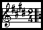

(Para ouvir a música clique aqui)
(Para ouvir a música clique aqui) "JUVENTUDE FRANCISCANA"
Letra e Música: Frei Antonio Fernando Fabretti

(Para ouvir a música clique aqui)
(INTRODUÇÃO) Lá-ia-la ia, lá-ia-la la, lá-ia-la ia, la, ia,(bis)
Viver a vida num sentido mais
profundo,
Anunciando que o Amor está entre nós,
Levar, contentes, um sorriso a toda gente,
Conter nos gestos a expressão do Bem maior.
(Refrão) Juventude Franciscana,
Instrumento do SENHOR,
Semeamos alegria,
Nos unimos no louvor.
Fazer da vida uma aquarela de mil cores,
A dor em flores, nós podemos transformar,
Caminhar sempre confiando em JESUS CRISTO,
Em São Francisco vamos todos ser sinais.
(Refrão) Juventude Franciscana...
É vocação ser Sal da terra e Luz do
mundo,
Cada segundo de trabalho é oração,
Viver a paz e desejar fraternidade
É conquistar o coração de cada irmão.
(Refrão) Juventude Franciscana...
Lá-ia-la ia, lá-ia-la la, lá-ia-la ia, la, ia, (bis)